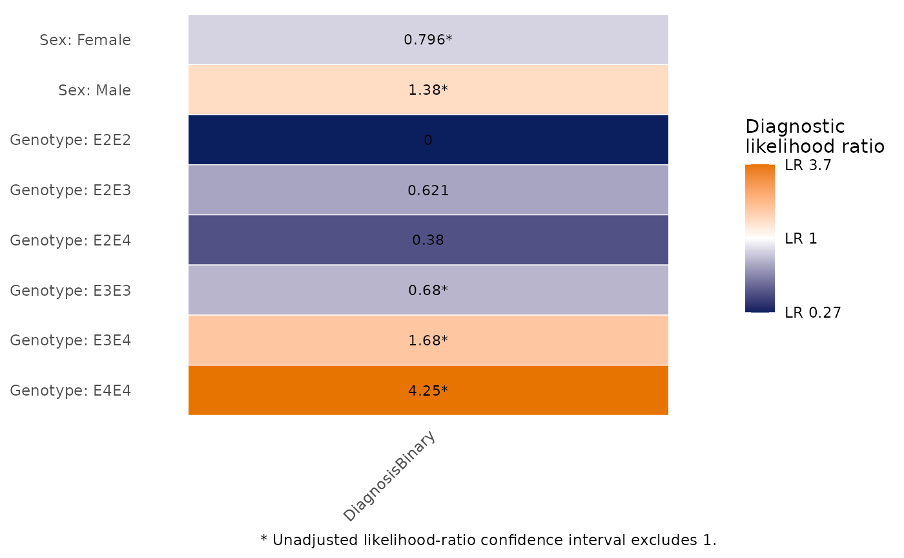

Calculate diagnostic likelihood ratios
Source:R/DiagnosticLikelihoodRatioTable.R
DiagnosticLikelihoodRatioTable.RdCalculates diagnostic likelihood ratios for categorical diagnostic results and binary outcomes. A likelihood ratio is the probability of a result among outcome-positive participants divided by its probability among outcome-negative participants; this is a diagnostic accuracy measure, not a nested-model test.
Usage
DiagnosticLikelihoodRatioTable(
data,
outcome_vars,
predictor_vars,
positive_level = NULL,
predictor_positive_level = NULL,
stratify_by = NULL,
confidence_level = 0.95,
continuity_correction = NULL,
Relabel = TRUE
)Arguments
- data
A data frame.
- outcome_vars
Character vector of binary outcome variable names.
- predictor_vars
Character vector of categorical or binary diagnostic predictor names.
- positive_level
Optional outcome-positive level specification:
NULL, one level for all outcomes, or a named vector keyed by outcome variable.- predictor_positive_level
Optional positive-result specification for binary predictors:
NULL, one level for all predictors, or a named vector.- stratify_by
Optional character vector of variables defining strata.
- confidence_level
Confidence level for log-scale LR confidence intervals.
- continuity_correction
Optional positive value added to all four calculation cells only if a zero cell occurs.
NULLpreserves zero and infinite estimates.- Relabel
Logical; use attached variable labels when available.
Value
A list containing Results, BinarySummary, compact and expanded gt
tables (FormattedTable, LargeTable, BinaryFormattedTable, and
BinaryLargeTable), and Metadata.
Details
Binary predictors produce sensitivity, specificity, LR+, and LR-. Predictors with more than two levels return one likelihood ratio for each result level. Numeric predictors with more than two observed values must be categorized first.
See also
PlotDiagnosticLRHeatmap() to visualize Results.
Examples
data(SampleData)
data(SampleVariableTypes)
df_Labelled <- RevalueData(SampleData, SampleVariableTypes)$RevaluedData
df_Labelled$DiagnosisBinary <- factor(df_Labelled$Diagnosis,
levels = c("Control", "Impaired"))
lr <- DiagnosticLikelihoodRatioTable(df_Labelled, "DiagnosisBinary",
c("sex", "Genotype"))
#> DiagnosisBinary: 'Impaired' treated as outcome-positive.
lr$FormattedTable
Diagnostic likelihood ratios
Stratum
Outcome
Diagnostic result
N
Case %
Control %
Likelihood ratio (95% CI)
PlotDiagnosticLRHeatmap(lr)
